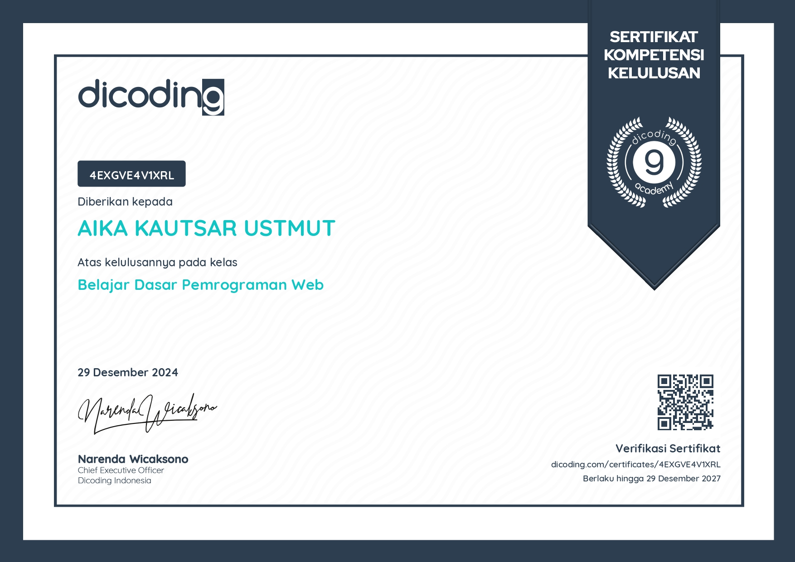
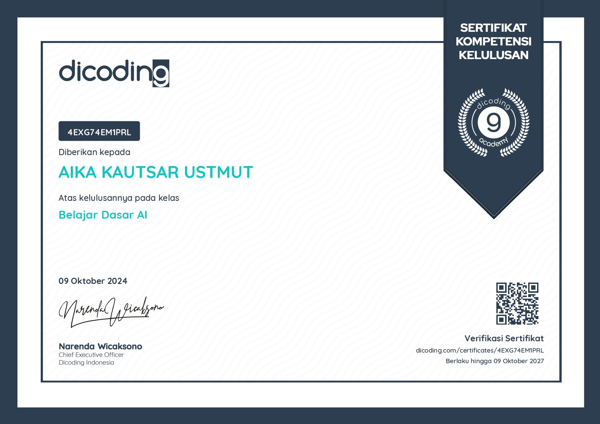

About Me

Halo! Saya Aika Kautsar Ustmut, seorang mahasiswa Informatika yang memiliki minat besar dalam pengembangan teknologi dan inovasi digital. Saat ini, saya tengah mengejar pendidikan di bidang Teknologi Informasi, dengan fokus pada pengembangan perangkat lunak, analisis data, dan desain antarmuka pengguna (UX/UI).
Saya percaya bahwa teknologi memiliki potensi besar untuk memberdayakan masyarakat dan menciptakan perubahan positif. Dengan visi untuk menjadi seorang pengembang teknologi yang inovatif, saya berharap dapat berkontribusi pada solusi-solusi yang dapat membantu menyelesaikan berbagai masalah yang dihadapi masyarakat.
Selain aspek teknis, saya juga memiliki ketertarikan dalam mempelajari perilaku pengguna untuk menciptakan pengalaman digital yang intuitif dan mudah digunakan. Sebagai seseorang yang menikmati kolaborasi dan tantangan baru, saya selalu bersemangat untuk bekerja dalam tim dan menyelesaikan proyek dengan cara yang kreatif dan efektif.
Melalui portofolio ini, saya ingin berbagi beberapa karya dan proyek yang telah saya kerjakan, serta menunjukkan keterampilan dan dedikasi saya dalam mengembangkan solusi berbasis teknologi yang dapat memberikan dampak positif.
Pendidikan
- Universitas Bengkulu – Informatika (2024 - Sekarang)
- MA Al-kautsar Banjar – IPA (2020 - 2023)
- MTs Al-kautsar Banjar
- SDIT Iqra 2 Kota Bengkulu
Keterampilan
Sertifikat
JAVA
.jpg)
DASAR PEMPROGRAMAN
DASAR AI
Proyek
Website Profil
Membuat website sederhana menggunakan HTML dan CSS untuk menampilkan informasi. Membuat web tentang alam tempat saya tinggal.
Lihat ProyekProyek Film Pendek
Membuat film pendek untuk tugas mata kuliah Proyek Sistem Multimedia dengan menggunakan aplikasi editing video Adobe Premiere. Mengatur alur cerita, pengambilan gambar, dan pengeditan video.
Lihat Proyek